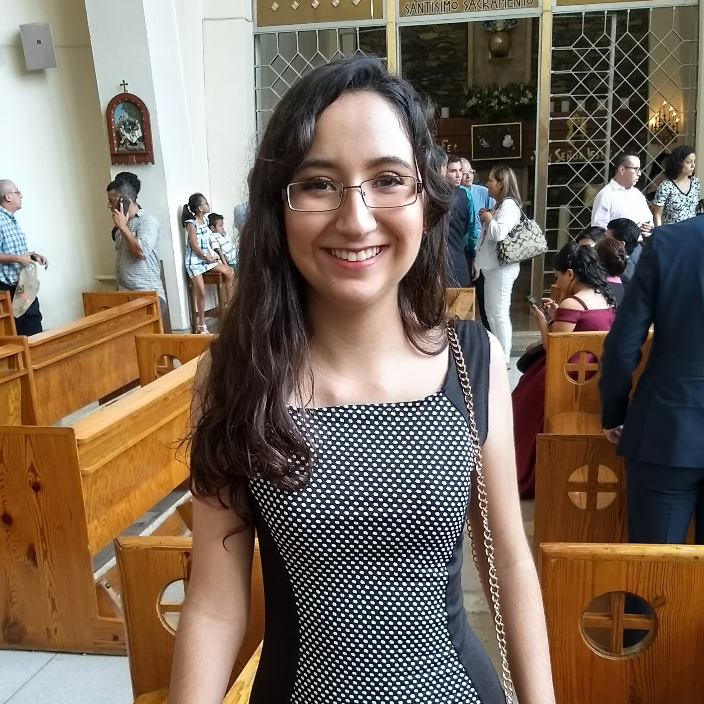

Esta es la practica #3 de la clase de Desarrollo Web, estamos aprendiendo a hacer páginas.
En esta ocasión voy a compartir mi CV.

Tanya Yaretzi González Elizondo
EDUCATION
ITESM - Monterrey Bachelor of Science in Computer Science and Technology Engineering (ITC).
Graduating in May 2022 | Cumulative GPA: 84/100
WORK EXPERIENCE
8/17 - Present Six Sigma, Monterrey, Mexico
Proposed a database design for the organization of more than 1500 clients.